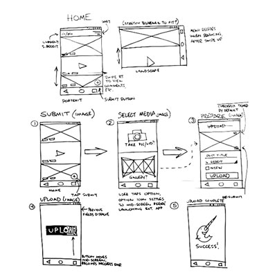

My personal experience with most Reddit apps has been lackluster.
For starters, few apps go beyond displaying content as an endless list, being very faithful to Reddit’s standard layout. The minimalist, feed-based approach is great for digesting content in high volume but comes at the expense of allowing users the chance to truly take in and share the unique content. After all, an appreciation for unique content is what tends to draw users to Reddit in the first place.
The focus of my redesign project was a popular Reddit app named BaconReader. Out of the numerous competitors, including the official Reddit app and Relay for Reddit, I ultimately chose BaconReader due in large part to my own familiarity with and affinity for the app.
This project was my first ever foray into user experience design. As a rookie UX designer, I developed the app’s design principles and followed a workflow similar in aim and purpose to the GV Design Sprint devised by Jake Knapp.
Just for fun I opted to rename and rebrand the app Whal/r/, in honor of Reddit’s collective love for the noble and majestic narwhal.
The goal for the first day was to put together a map of the design challenge and decide upon a target problem that I could solve by the end of the week. To begin my design sprint, I set to work asking some important questions about the Whal/r/ app. I tried to think about overall expectations, challenge my own assumptions about the typical Reddit user, and tease out a rough process map.

By the end of day one I had set my sights on building a simple solution for post submission and commenting.
“Remix and improve” was the theme for day two. Throughout my Tuesday session I reviewed relevant Baconreader functionality, rendered a handful of solution sketches for specific user scenarios, and attempted a rapid rework of the day’s ideas through the “Crazy 8’s” exercise.
Taking from the Lightning Demo exercise, I put to paper a number of screens from the BaconReader app which were in step with my target user flow – post submission and comment.

Some key insights of my capture and analysis of BaconReader were:
As I began sketching screens I tried to keep in mind

The rather intense, one minute ideation sessions were helpful in addressing a few important questions concerning interaction with the app and display defaults.


Several user interviews were conducted to evaluate user habits when browsing Reddit.